Tutorial / Setup / Desktop
OpenAkita Desktop 安装与配置指南
覆盖下载安装、初次配置向导与完整配置全流程。
前置条件
- 官网地址：openakita.ai/download
- LLM API Key：OpenAkita 本身是一个框架，需要连接大模型才能思考。如果没有 API Key，可以前往对应官网注册（如阿里云、DeepSeek、Anthropic 等）
1. 下载安装包
根据你的操作系统下载对应的安装包，教程以 Windows 11、v1.24.16 版本为例。
- 打开浏览器，访问 OpenAkita 官网下载地址
- 根据你的操作系统下载对应的安装包，点击下载

2. 正式安装
- 找到刚刚下载的 .exe 文件，双击打开
- 根据安装向导指引，点击「下一步」
- 选择安装路径
- 点击「安装」
- 等待进度条走完（看到一个黑色命令窗口一闪而过，这是正常的）
- 安装结束后，勾选「运行 OpenAkita Desktop」和「创建桌面快捷方式」
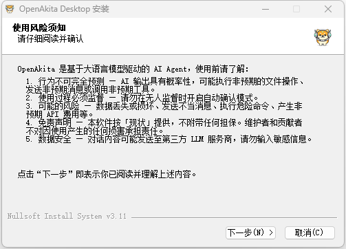
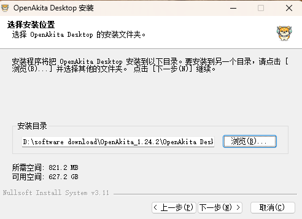
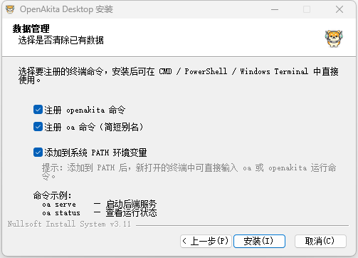
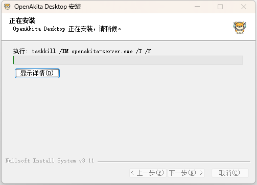
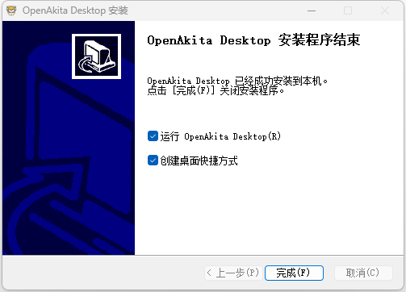
3. 配置向导（初次配置）
- 欢迎使用 OpenAkita 页面，点击「开始配置」
- 确认使用风险，输入"我已知晓"
- 配置 LLM 端点：至少添加 1 个 LLM 端点 才能开始使用
- 点击 LLM 中的「添加端点」
- 选择服务商，填写 API Key
- 点击「重新拉取」，选择模型
- 点击「添加端点」
- 配置 IM 通道：暂时可不填，直接跳过
- 终端命令与系统设置：根据需求设置，点击「下一步」
- 配置完成，进入 OpenAkita 会自动启动服务
- 切换到聊天页面，即可开始使用
注意：可在配置向导页面选择暂不配置 LLM 和 IM 通道，进入 OpenAkita 后再进行配置。
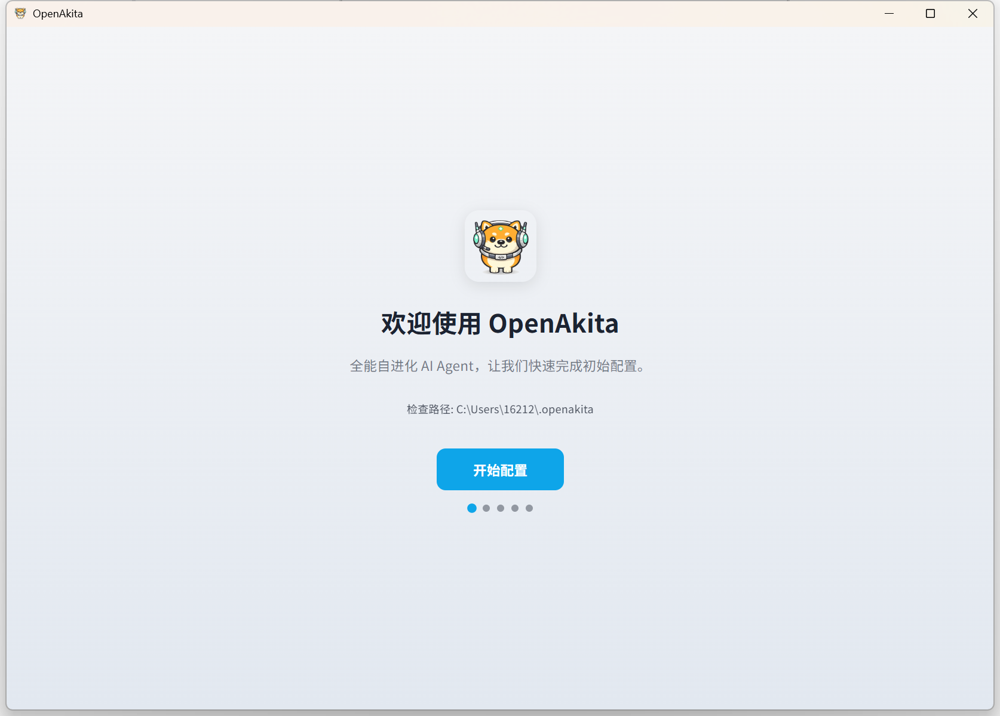
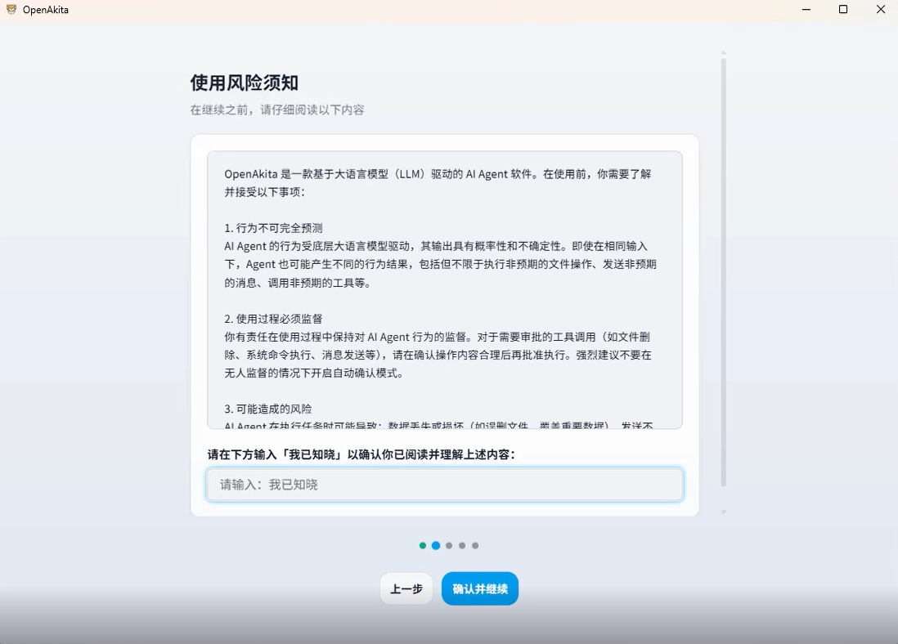
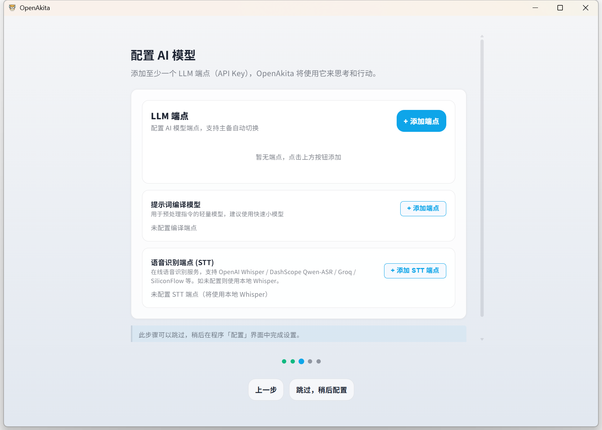

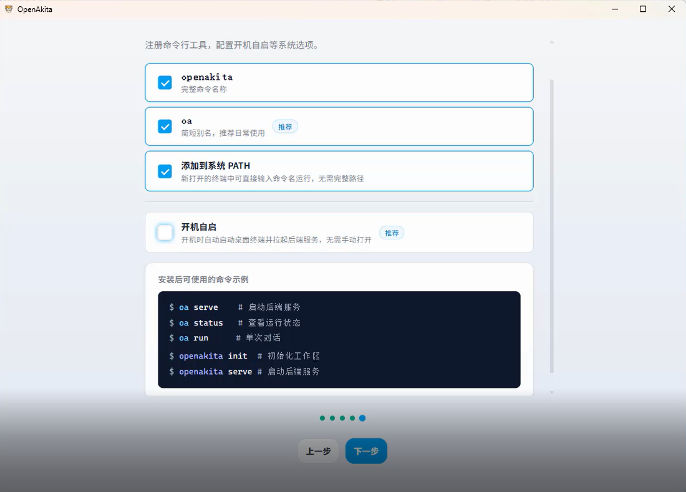
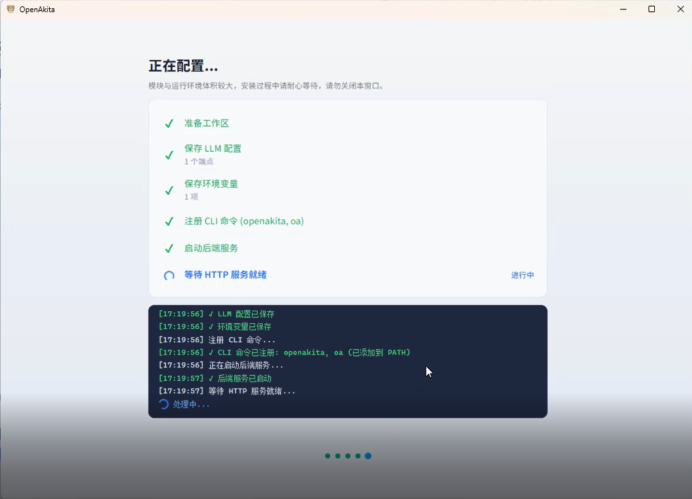
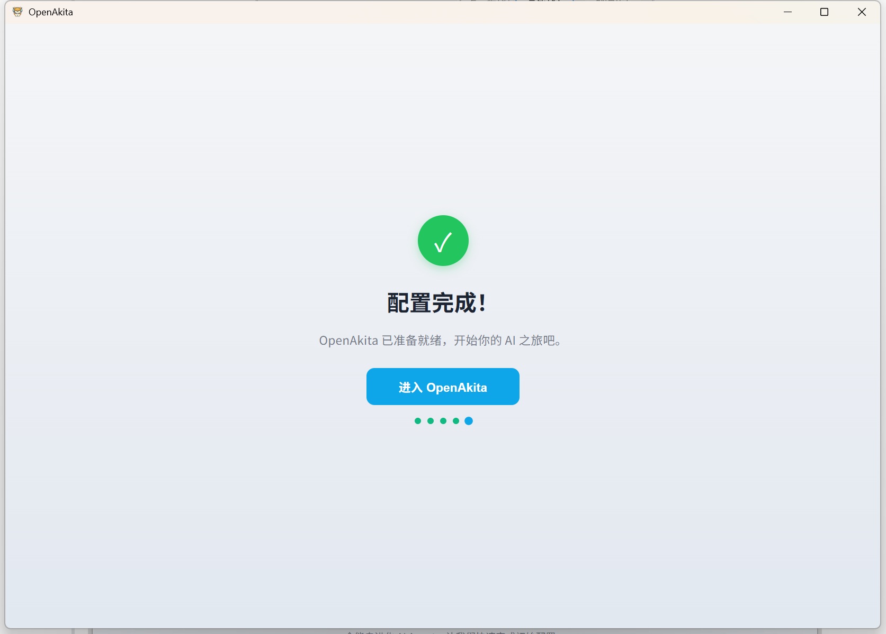
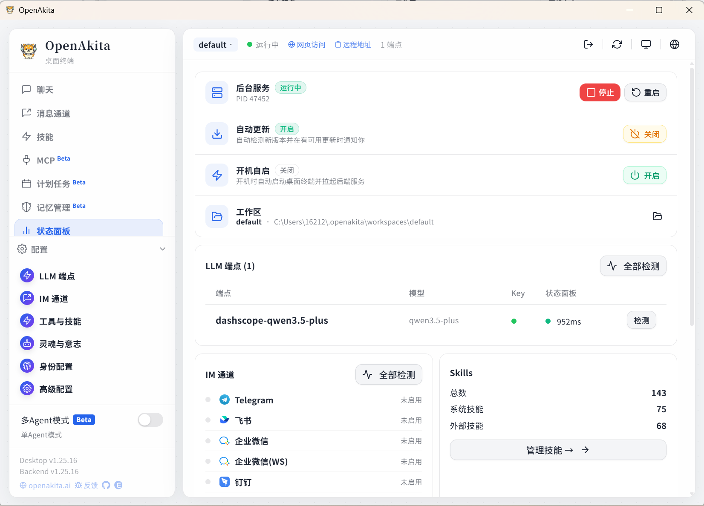
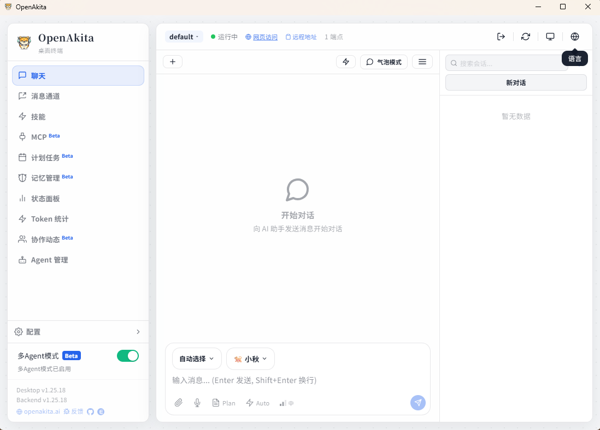
4. 完整配置
完整配置提供对各功能模块的精细控制，适合需要自定义 LLM 端点、接入 IM 通道、调整 Agent 行为等的用户。
4.1 LLM 端点配置（必填）
LLM 端点是 OpenAkita 调用大语言模型的入口。你可以配置多个端点，系统会根据优先级和可用性自动选择。

| 字段 | 说明 | 示例 |
|---|---|---|
| 服务商 | 选择 LLM 服务提供商 | 通义千问、OpenAI、Anthropic 等 |
| Base URL | API 接口地址（选择服务商后自动填充） | https://dashscope.aliyuncs.com/compatible-mode/v1 |
| API Key | 你的 API 密钥 | sk-xxxxx |
| 模型 | 选择或输入模型名称（支持在线拉取模型列表） | qwen-max、gpt-4o |
| 端点名称 | 自动生成，也可自定义 | dashscope-qwen-max |
| 能力标签 | 勾选该模型支持的能力 | text、thinking、vision、tools |
支持的服务商
国内服务商：
| 服务商 | API 类型 | 默认 Base URL |
|---|---|---|
| 通义千问（DashScope） | openai | https://dashscope.aliyuncs.com/compatible-mode/v1 |
| 智谱 AI | openai | https://open.bigmodel.cn/api/paas/v4 |
| 百度千帆 | openai | https://qianfan.baidubce.com/v2 |
| DeepSeek | openai | https://api.deepseek.com/v1 |
| 月之暗面（Kimi） | openai | https://api.moonshot.cn/v1 |
| 字节豆包（火山引擎） | openai | https://ark.cn-beijing.volces.com/api/v3 |
| SiliconFlow | openai | https://api.siliconflow.cn/v1 |
国际服务商：
| 服务商 | API 类型 | 默认 Base URL |
|---|---|---|
| OpenAI | openai | https://api.openai.com/v1 |
| Anthropic | anthropic | https://api.anthropic.com |
| Google Gemini | openai | https://generativelanguage.googleapis.com/v1beta/openai |
| Groq | openai | https://api.groq.com/openai/v1 |
| Mistral | openai | https://api.mistral.ai/v1 |
| OpenRouter | openai | https://openrouter.ai/api/v1 |
多端点与 Failover
- 优先级调度：优先使用 Priority 值最小的端点
- 自动降级：主端点不可用时自动切换到备用端点
- 健康检查：后台定期检测端点可用性
- 冷却机制：连续失败的端点会被临时冷却，避免反复重试
建议：至少配置 2 个端点（不同服务商），以确保高可用性。
4.2 IM 通道
IM 通道让你可以通过即时通讯工具与 OpenAkita 对话。所有通道均为可选配置。

| 通道 | 关键字段 |
|---|---|
| 微信 | Token（扫码后直接填入） |
| 飞书 | App ID、App Secret（开放平台自建应用） |
| 钉钉 | Client ID、Client Secret（企业内部应用） |
| 企业微信 | Bot ID、Secret |
| App ID、App Secret | |
| Telegram | Bot Token、代理（国内需要） |
4.3 工具与技能
配置 OpenAkita 可以使用的工具和技能扩展，包括 MCP 工具、Skills 管理和桌面自动化。
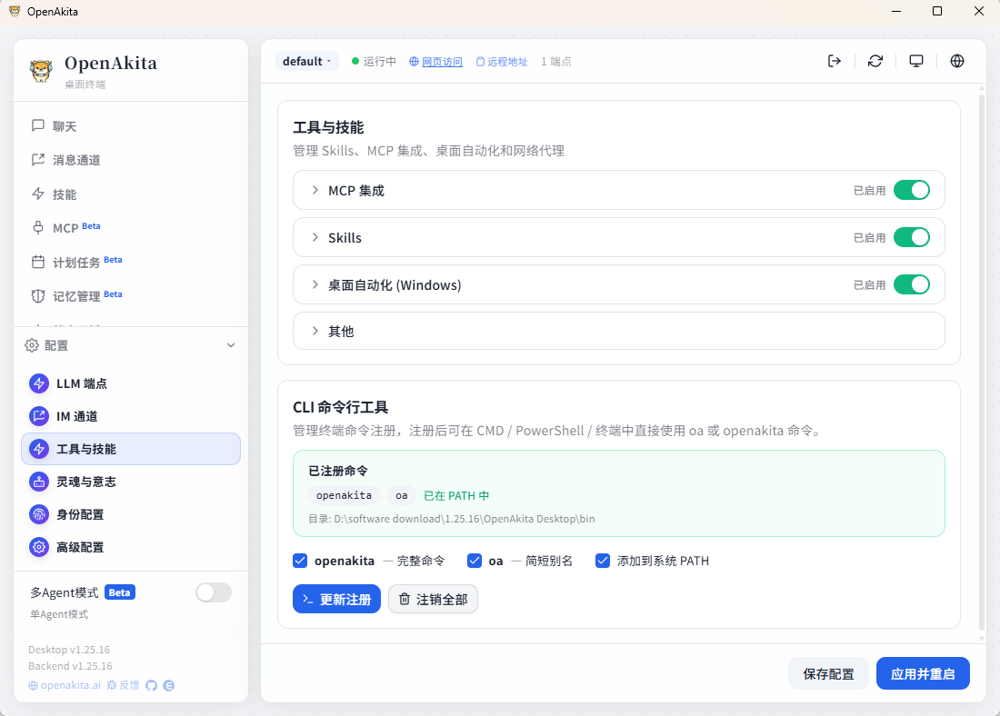
桌面自动化
| 配置项 | 默认值 | 说明 |
|---|---|---|
| 桌面自动化 | 开启 | 总开关 |
| 默认显示器 | 0 | 多显示器时指定主屏幕 |
| 最大宽度 / 高度 | 1920 / 1080 | 截图最大尺寸 |
| 视觉识别 | 开启 | 使用视觉模型辅助桌面操作 |
4.4 灵魂与意志
灵魂（Soul）
内置多种预设角色人格，包括：默认助手、商务顾问、技术专家、私人管家、虚拟女友 / 男友、家人、贾维斯及自定义。
| 配置项 | 默认值 | 说明 |
|---|---|---|
| Agent 名称 | OpenAkita | Agent 的显示名称 |
| 最大迭代次数 | 300 | 单次任务的最大执行步数 |
| 思考模式 | auto | auto / always / never |
| 自动确认 | false | 是否跳过用户确认直接执行工具 |
| 记忆管理 | 开启 | Agent 会记住你说过的话和偏好 |
意志（Will）
| 配置项 | 默认值 | 说明 |
|---|---|---|
| 主动任务 | 启用 | 让 Agent 主动找你聊天 |
| 每日最大消息 | 3 | 每天主动消息数量上限 |
| 安静时段 | 23:00 - 07:00 | 不发送主动消息的时间段 |
| 计划任务 | 启用 | 定时让 Agent 自动执行指定任务 |
| 时区 | Asia/Shanghai | 计划任务使用的时区 |
4.5 高级配置

| 类别 | 配置项 | 说明 |
|---|---|---|
| 桌面通知 | 任务完成通知、提示音 | 任务完成时弹出系统通知 |
| 会话 | 超时、最大历史 | 默认 30 分钟超时，保留 50 条消息 |
| 网络 | 允许外部访问、反向代理模式 | 局域网/公网访问及 Nginx/Caddy 支持 |
| 数据 | 定时备份、迁移工作区 | 自动备份配置、对话记忆等 |
4.6 多 Agent 模式
多 Agent 模式默认关闭，启用后支持多个 Agent 协作执行任务。
4.7 完成
配置完成后，点击「应用并重启」，即可启动服务。
所有配置项均通过工作区的 .env 文件管理，路径：~/.openakita/workspaces/{workspace_id}/.env